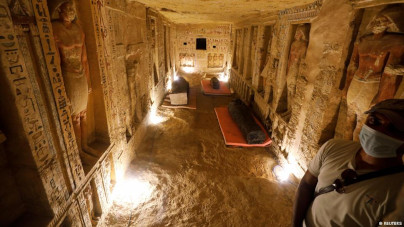

As pirâmides do Egito estão entre os principais motivos para que turistas de todo canto do mundo coloquem o país africano no roteiro de viagens.
Quando falamos em pirâmides do Egito, a imagem clássica que vem à cabeça é a das Pirâmides de Gizé imponentes perto de outras pirâmides menores.
Difícil é não ficar imaginando quem construiu as pirâmides do Egito, mas também a forma como elas foram construídas.
aceita é de que as pirâmides são obras de trabalhadores livres, a maioria deles camponeses.
Nos períodos de cheia do Rio Nilo, os camponeses da região trabalhavam em obras públicas em troca de alimento e cuidados médicos, mas também em devoção aos faraós.
Ok, mas além de saber quem são os responsáveis, como foram construídas as pirâmides do Egito?
Esta sim é uma questão intrigante! O que cientistas e pesquisadores tratam como fato, com base em descobertas arqueológicas, é que os egípcios utilizam trenós de madeira para mover os enormes blocos de pedra — a mais pesada de Quéops tem 6 toneladas!
Para mover os trenós, eram utilizadas cordas, troncos, um sistema de alavancagem (os egípcios tinham conhecimentos avançados para a época) e até a água.

A palavra sarcófago vem do grego, significando "comedor de carne", no sentido de que se tratava de um caixão com a função de proteger a múmia nele colocada. O sarcófago surgiu como forma de superar o enterramento simples do corpo na areia quente do deserto, que o dissecava. Esta prática de enterramento era comum antes do Egito, antes da Época Arcaica (ou Tinita), iniciada cerca de 3000 a. C. A colocação do corpo nos sarcófagos, ulteriormente, revelou-se, ironicamente, prejudicial, pois levava-o à sua deterioração, o que faz supor que por esta razão se terá desenvolvido paralelamente a mumificação, como forma de conservar o corpo, como acontecia no tempo em que a própria areia quente e seca o fazia. A mumificação terá sido a resposta a essa tentativa de voltar a ter os corpos dos defuntos conservados, mas dentro de um sarcófago e já não na areia do deserto.
Religiosamente, o sarcófago servia para ser a "casa do ka" do morto (o ka era a força vital e sexual do indivíduo, para os Egípcios, a qual se podia manter na eternidade), além de preservar o corpo do defunto para a outra vida. Os Egípcios chamavam ao sarcófago de neb-ankh, "senhor da vida".